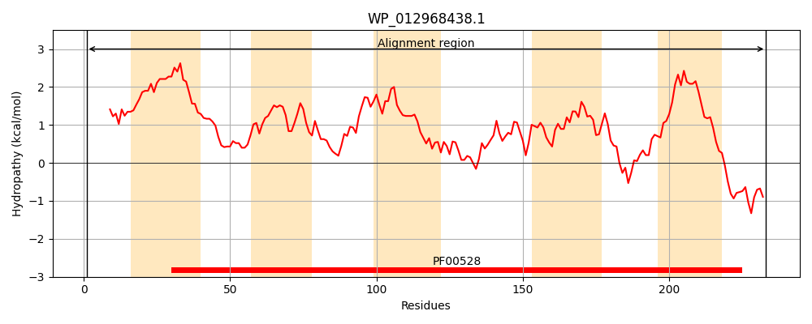
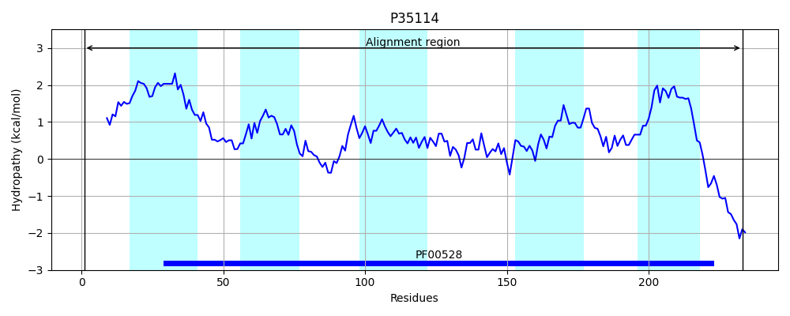
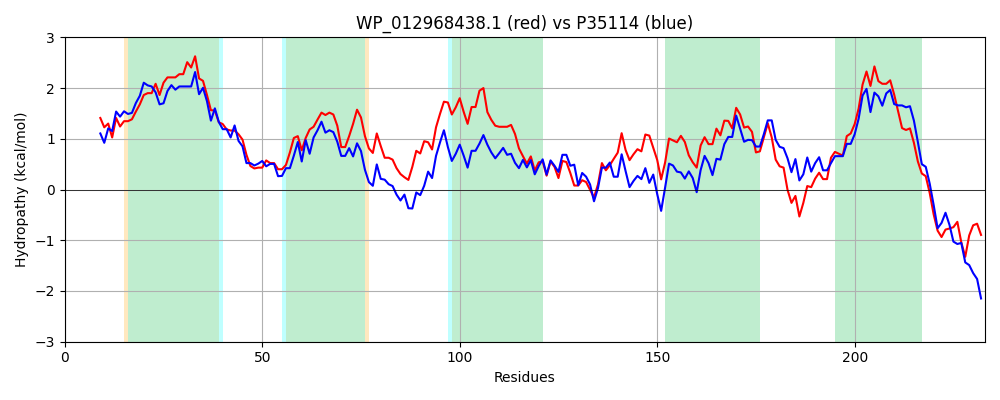

Hit Accession: P35114
Hit TCID: 3.A.1.3.5
Hit Description: gnl|BL_ORD_ID|9983 gnl|TC-DB|P35114|3.A.1.3.5 Octopine transport system permease protein occM - Agrobacterium tumefaciens.
Mach Len: 233
e:0.000000
Query TMS Count : 5
Hit TMS Count: 5
TMS-Overlap Score: 5.850000
Predicted Substrates:CHEBI:7366;D-octopine
BLAST Alignment:
Score: 623 , Bit scores: 244 bits, E-value: 9.0e-82, Alignment length: 233, Percentage identity: 53
Query: 1 MFIDFAFLGETLLKLGAALPVTLGLFICSFILGGVLALGVLALRMSHWPLASGFAKGYILIFRGSPLLIQLFLIYYGLGQFGVIRHSFLWPLLREPFICAVLALALCTAAYTAEILRGGLLAIPPGQIEAGQACGMSRWLLLRRIIAPVMLRYALPAYSTEAILLVKSTALASLVTVWDVTGVAQQIIQRTYRTMEVFLCAAAIYLLLNFIIVQLYALLERRLTPHTRQNPAT 233
M D AFL +T + L + +P+ L L + S LG VLA G+ +R+S A+ YI FRG+PLL+Q+++IYYGL QF +RHSF+WP LR+ + CA+ ALAL TAAYTAEI+RGGLL++P GQIEA +ACGM R L RRI+ P +R LP YS E IL+VKST+LAS +T+ ++TG+A ++I +YRT+EVF CA AIYL+LNFI+ +L+ LLE L P R N T
Sbjct: 1 MPFDPAFLWQTFVALLSGIPLALQLAVFSVALGTVLAFGLALMRVSRLWWLDLPARFYIFAFRGTPLLVQIYIIYYGLSQFPDVRHSFIWPFLRDAYWCAMAALALNTAAYTAEIMRGGLLSVPAGQIEAAKACGMGRVKLFRRIVIPQAIRQMLPGYSNEVILMVKSTSLASTITIMEITGIAAKLISESYRTVEVFSCAGAIYLILNFIVARLFTLLEWALWPERRNNRLT 233 | Protein Hydropathy Plots: |
|---|
|  |  |
Pairwise Alignment-Hydropathy Plot:
|
|---|
|  |